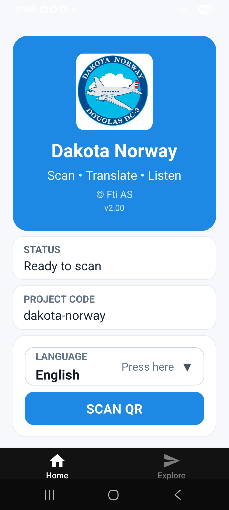

QR DOC READER is a specialized mobile application for QR-based document access, translation, and assisted reading.
QR DOC READER is not a general-purpose QR scanner. It is a specialized tool for structured document access, reading, translation, and text-to-speech playback. The app can read aloud the document content in one of 12 selectable languages chosen directly within the QR DOC READER application.
The application is designed for controlled workflows where QR codes provide access to predefined text-based documents. It is intended for structured information use, including technical content, instructions, guided reading, and multilingual support.
This application does not function as a generic QR scanner for arbitrary web browsing. It is part of a controlled document system where QR codes are used to open relevant content for reading, translation, and listening.

This page serves as the official public information page for the Dakota Norway / QR DOC READER application.